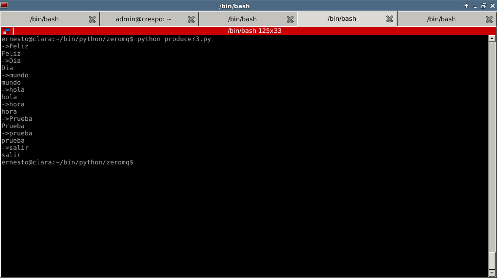
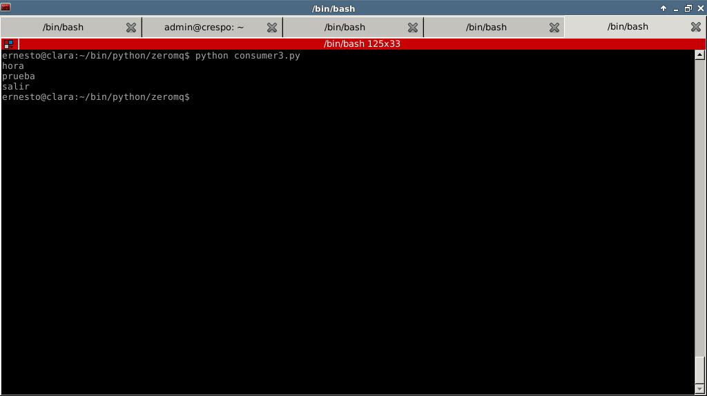

Siguiendo con los ejemplos sobre ZeroMQ. Este artículo muestra el uso del patrón PUB/SUB como en el artículo de zeroMQ parte 4 .
La diferencia está en la definición del transporte, en la parte 4 se usa tcp y en este caso se usará epgm que se usa para multicast.
El ejemplo que se mostrará se basa en el artículo de Saghul Ibarra en su blog Saghul Ibarra en su blog. El productor crea una línea de comandos donde se pasa el texto al consumidor, el consumidor recibe el texto y sólo se muestra en pantalla el texto que está definido en la subscripción.
En el productor se define unas opciones en el socket, en el sitio de ZeroMQ tiene una explicación de las opciones para crear el socket. LINGER con parámetro cero define que se descarte mensajes que no son enviados.
El código del productor se muestra a continuación:
#!/usr/bin/env python
#
# producer
#Se importa ZeroMQ
import zmq
#Se crea la instancia de la clase Context.
context = zmq.Context()
#Se define el socket con parametro PUB
socket = context.socket(zmq.PUB)
#Se define unas opciones en el socket
#esta opcion LINGER con valor cero, descarta mensajes no enviados
socket.setsockopt(zmq.LINGER, 0)
#Se conecta al socket a la IP y puerto
#por medio de multicast
socket.connect('epgm://192.168.10.96:5000')
#Se crea un ciclo
#si se envia el texto salir, se envia y luego finaliza el ciclo
#si no, se envia el texto
while True:
mensaje = raw_input("->")
print mensaje
socket.send(mensaje)
if mensaje == "salir": break
socket.close()
El código del programa consumidor es el siguiente:
#!/usr/bin/env python
#Importar zeroMQ
import zmq
#Se crea la instancia de la clase contexto
context = zmq.Context()
#Se define el socket con parametro SUB
socket = context.socket(zmq.SUB)
#Se conecta el socket a la IP y puerto del productor
#con el transporte epgm
socket.connect('epgm://192.168.10.96:5000')
#Se define los textos que se recibe la informacion.
#prueba, hora y salir.
socket.setsockopt(zmq.SUBSCRIBE, 'prueba')
socket.setsockopt(zmq.SUBSCRIBE, 'hora')
socket.setsockopt(zmq.SUBSCRIBE, 'salir')
#Se define un ciclo,
#se recibe la informacion
#Si el texto es salir se muestra en pantalla
#finaliza el ciclo, si no se muestra
#el texto en pantalla
while True:
rcv = socket.recv()
print rcv
if rcv == "salir": break
Las siguientes figuras muestran el resultado de la ejecución de ambos programas: Productor:

Consumidor:

¡Haz tu donativo! Si te gustó el artículo puedes realizar un donativo con Bitcoin (BTC) usando la billetera digital de tu preferencia a la siguiente dirección: 17MtNybhdkA9GV3UNS6BTwPcuhjXoPrSzV
O Escaneando el código QR desde la billetera:

Comments !